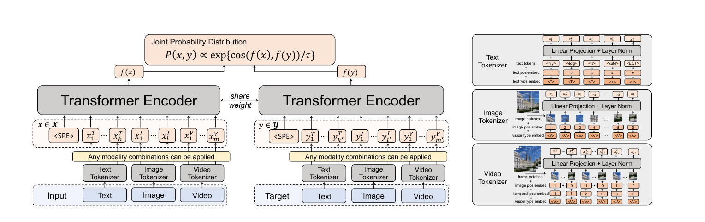
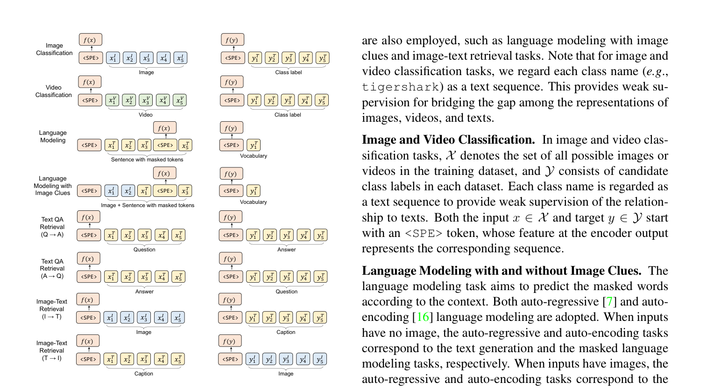
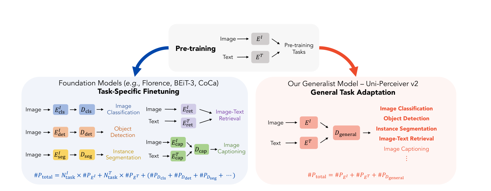
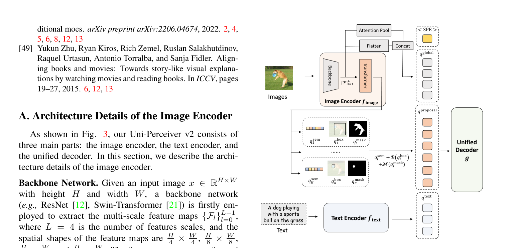

UniPerceiver
UniPerceiver¶
本笔记涵盖 UniPerceiver → UniPerceiver v2 的演进历程。
| 版本 | 论文 | 时间 | 核心变化 |
|---|---|---|---|
| UniPerceiver v1 | Uni-Perceiver: Pre-training Unified Architecture for Generic Perception for Zero-shot and Few-shot Tasks | CVPR 2022 | 提出统一感知架构，用共享 Transformer + 模态专用 tokenizer 处理多模态多任务，支持 zero-shot/few-shot |
| UniPerceiver v2 | Uni-Perceiver v2: A Generalist Model for Large-Scale Vision and Vision-Language Tasks | CVPR 2023 | 引入通用区域提议编码图像、集成预训练编码器、提出 MT-AdamW 优化器，首次同时支持检测/分割/检索/分类/生成等核心任务 |
第一部分：UniPerceiver - 统一感知架构的通用感知预训练¶
📄 论文链接：arXiv:2112.01522 | PDF
目录¶
- 核心要点
- 1. 背景与动机
- 2. 方法
- 3. 网络结构
- 4. UniPerceiver v1 总结
- 核心要点
- 1. 背景与动机
- 2. 方法
- 3. 网络结构
- 4. UniPerceiver v2 总结
- 两代方法对比
- 架构差异深度分析
- 与其他方法的对比
核心要点¶
- 统一建模范式：将不同模态（文本、图像、视频）和不同任务统一建模为"给定输入，通过表示相似度找到最大似然目标"的通用公式，无需任务特定的预测头
- 模态无关的共享 Transformer：所有模态的 token 序列通过同一个权重共享的 Transformer Encoder 编码到统一的表示空间，仅通过轻量级模态专用 tokenizer 做模态适配
- Zero-shot 与 Few-shot 能力：预训练模型无需任何微调即可在未见过的任务上进行 zero-shot 推理；仅需 1% 数据的 prompt tuning 即可接近 SOTA 性能
- 统一任务公式替代任务特定设计：不同于以往方法需要为每个任务设计专门的输入格式和预测头，UniPerceiver 将所有感知任务统一为联合概率估计问题
- 跨模态协作：多任务联合预训练促进了不同模态和任务之间的知识共享，降低了开发新任务的边际成本
1. 背景与动机¶
1.1 现有方法的局限¶
传统的机器学习研究遵循任务特定范式（task-specific paradigm），即为每个感知任务单独设计模型架构、输入格式和预测头。这带来两个核心问题：
- 任务间协作低效：不同任务的专门设计阻碍了任务间的知识共享，可能损害表示能力
- 新任务开发成本高：当预训练模型应用于新任务时，需要重新设计输入格式和预测头，并在充足的下游数据上微调。随着任务数量和模型规模增长，所有参数都需要为每个下游任务复制和维护，变得低效且不便
此外，当微调数据不足时，模型可能遗忘对下游任务有益的预训练知识，从而损害泛化性能。
1.2 生物智能的启发¶
生物智能系统通过整合不同模态的信息并同时处理各种任务来感知世界。UniPerceiver 的目标是模拟这种能力，构建一个能够用统一建模和共享参数处理多种模态和任务的通用感知架构。
1.3 与已有统一架构的区别¶
已有的多模态 Transformer 方法（如 ViLT、UNITER 等）虽然使用了统一的 Transformer 骨干网络，但仍然需要： - 针对目标任务设计的特定输入组合 - 为每个任务专门设计和训练的预测头
UniPerceiver 的核心创新在于彻底消除了任务特定的预测头，将所有任务统一为表示相似度的计算。
 Figure 1: 对比传统任务特定感知模型与 UniPerceiver。左侧传统方法为每个任务设计专门的模型和预测头；右侧 UniPerceiver 使用单一 Siamese 模型和共享参数处理所有模态和任务。
Figure 1: 对比传统任务特定感知模型与 UniPerceiver。左侧传统方法为每个任务设计专门的模型和预测头；右侧 UniPerceiver 使用单一 Siamese 模型和共享参数处理所有模态和任务。
2. 方法¶
2.1 统一任务公式¶
UniPerceiver 将所有感知任务统一建模为以下公式：
给定输入 \(x \in X\) 和候选目标集合 \(Y\)，任务目标是找到与输入具有最大似然的目标 \(\hat{y}\)：
其中联合概率 \(P(x, y)\) 通过输入和目标表示的余弦相似度来估计：
这里 \(f(\cdot)\) 是将原始输入编码到统一表示空间的函数，\(\tau\) 是可学习的温度参数。
整个推理过程的直观理解：
输入 x → f(x) （共享 Transformer 编码）
目标 y → f(y) （同一个 Transformer 编码）
cos(f(x), f(y)) （余弦相似度）
选最大相似度对应的 y 作为预测
输入 \(x\) 和目标 \(y\) 都经过同一个权重共享的 Transformer 编码到统一的表示空间，然后通过余弦相似度 \(\cos(f(x), f(y))\) 计算它们的匹配程度。预测就是候选集中与输入最相似的那个目标。
x 和 y 可以是不同模态：这正是该设计的核心意义。通过模态专用 tokenizer + 共享 Transformer，不同模态的数据被编码到同一个向量空间，余弦相似度才有意义。论文中各任务的 x/y 模态组合如下：
| 任务 | x（输入） | y（目标） | 跨模态？ |
|---|---|---|---|
| 图像分类 | 图像 | 文本（类别标签） | ✅ 视觉→语言 |
| 视频分类 | 视频 | 文本（动作标签） | ✅ 视觉→语言 |
| 图文检索 | 图像 / 文本 | 文本 / 图像 | ✅ 双向跨模态 |
| 语言建模 | 文本（前文） | 文本（下一个 token） | 同模态 |
| 带图像线索的语言建模 | 图像 + 文本（含 mask） | 文本（被 mask 的 token） | ✅ 多模态→语言 |
| 文本问答检索 | 文本（问题） | 文本（答案） | 同模态 |
模型能跨模态计算相似度，靠两件事配合：模态专用 tokenizer 负责把不同模态的原始数据统一成 token 序列格式，共享 Transformer 把这些 token 编码到同一个向量空间，使得图像特征和文本特征可以直接用余弦相似度比较。
这一公式的关键优势在于： - 不需要任务特定的预测头：所有任务都通过相同的相似度计算来完成 - 天然支持 zero-shot：只要能将新任务的输入和目标编码到同一表示空间，就可以直接推理 - 统一了生成和非生成任务：无论是分类、检索还是语言建模，都可以用同一公式表达
2.2 Tokenization（标记化）¶
不同模态的原始输入通过模态专用 tokenizer 转换为统一的 token 序列：
- 文本 Tokenizer：使用 BPE tokenizer，将文本分割为子词并通过线性嵌入层投影。添加可学习的 1D 位置嵌入（最大长度 256）和文本模态嵌入
<T> - 图像 Tokenizer：使用 image patch tokenizer，将图像调整为 224×224，展平为 16×16 的 patch 序列并线性投影。添加可学习的图像位置嵌入（14×14=196）和视觉模态嵌入
<V> - 视频 Tokenizer：使用时间帧 patch tokenizer，每帧展平为图像 patch。对于 N 帧视频（默认 N=8），token 数量为 N×14×14。添加空间位置嵌入和 1D 时间位置嵌入，以及视觉模态嵌入
<V>
所有 tokenizer 的输出都附加了模态类型嵌入以标识原始输入的模态。
2.3 模态无关的 Transformer Encoder¶
所有模态的 token 序列通过同一个权重共享的 Transformer Encoder 进行编码。Encoder 不区分模态，仅通过模态类型嵌入来感知模态信息。这使得模型能够在统一的表示空间中学习跨模态的语义对齐。

Figure 2: UniPerceiver 统一架构概览。不同模态的输入和目标通过模态专用 tokenizer 转换为统一 token 序列，再通过权重共享的 Transformer Encoder 编码到共享表示空间。任意感知任务都可以建模为通过表示相似度找到最大似然目标。2.4 预训练任务¶
UniPerceiver 在多个单模态和多模态任务上进行联合预训练。所有任务都使用统一的公式，仅在输入和目标的构造上有所不同：

Figure 3: 预训练任务的输入和目标格式。左列为输入序列 x 的格式，右列为目标序列 y 的格式。包括图像分类、视频分类、语言建模、带图像线索的语言建模、文本问答检索、图文检索等多种任务。具体预训练任务包括： - 图像分类：输入为图像，目标为类别标签文本 - 视频分类：输入为视频，目标为类别标签文本 - 自回归语言建模：输入为前文 token，目标为下一个 token - 掩码语言建模：输入为含 mask 的句子，目标为被 mask 的 token - 带图像线索的语言建模：输入为图像+含 mask 的句子，目标为被 mask 的 token - 图文检索：输入为图像/文本，目标为对应的文本/图像 - 文本问答检索：输入为问题/答案，目标为答案/问题
2.5 下游适配策略¶
UniPerceiver 提供三种下游适配方式：
Zero-shot 推理：直接将新任务的输入和目标编码后计算相似度，无需任何训练。也可以通过 prompt engineering 改善性能。
Prompt Tuning：冻结大部分预训练参数，仅在 Transformer 每层添加少量可学习的 prompt token。对于分类任务额外添加线性头。可学习参数仅占预训练参数的不到 1%（约 227K~995K）。采用 P-Tuning v2 方案，在每层 Transformer 添加可学习 prompt。
Full Fine-tuning：在充足的下游数据上微调整个模型。可以作为联合概率估计器（保持统一公式）或特征提取器（传统方式）使用。
3. 网络结构¶
3.1 整体架构¶
UniPerceiver 的网络结构由三部分组成：
- 模态专用 Tokenizer（轻量级）：负责将各模态原始数据转为 token 序列
- 共享 Transformer Encoder（主体）：权重共享的多层 Transformer，将不同模态的 token 编码到统一表示空间
- 统一相似度计算模块：通过余弦相似度计算输入和目标表示的联合概率
整个模型没有任务特定的预测头，这是与传统方法最根本的区别。
3.2 关键设计细节¶
<SPE>token：在每个输入和目标序列开头添加特殊的 sequence position embedding token，用于聚合整个序列的表示- 模态类型嵌入：
<T>表示文本，<V>表示视觉，帮助共享 Encoder 区分模态 - 自回归任务的 attention mask：对于语言建模等自回归任务，使用因果 attention mask 确保自回归性质
- 温度参数 \(\tau\)：可学习的标量参数，控制相似度分布的锐度
3.3 预训练配置¶
- 图像分类数据：ImageNet-21k
- 视频分类数据：Kinetics-700, Moments in Time
- 语言建模数据：Books & Wiki
- 图文数据：YFCC, CC12M, CC3M, Visual Genome, COCO Caption, SBU, PAQ
- 数据增强：RandAug, Random Erasing, Mixup, CutMix
4. UniPerceiver v1 总结¶
UniPerceiver v1 的核心贡献是提出了一个真正统一的感知架构，通过消除任务特定的预测头，将所有感知任务统一为表示相似度的计算。这一设计使得模型具备了 zero-shot 能力和极低的新任务适配成本。然而，v1 仍存在以下局限：
- 不支持检测和分割任务：由于缺乏定位信息，无法处理需要空间定位的任务
- 未集成预训练编码器：从零开始训练编码器，未能利用已有的大规模预训练模型
- 多任务干扰问题：完全共享参数的多任务学习可能导致任务间的梯度冲突和性能下降
第二部分：UniPerceiver v2 - 面向大规模视觉与视觉语言任务的通才模型¶
📄 论文链接：arXiv:2211.09808 | PDF
核心要点¶
- 首个覆盖核心视觉任务的通才模型：首次同时支持图像分类、目标检测、实例分割、图文检索、图像描述等主要大规模视觉和视觉语言任务，且在无任务特定微调的情况下达到有竞争力的性能
- 通用区域提议编码：将图像编码为通用区域提议（包含语义、边界框和分割掩码表示），替代 v1 中的非重叠 patch 编码，使定位建模更具表达力和灵活性
- 集成预训练编码器：图像端使用预训练的 backbone（ResNet/Swin Transformer）+ Deformable DETR 区域提议网络，文本端使用预训练 RoBERTa，充分利用已有预训练知识
- MT-AdamW 优化器：提出改进的多任务优化器，通过梯度归一化、任务特定补偿系数和解耦采样比率，确保不混合采样策略下的稳定多任务训练
- Conditional MoE 缓解任务干扰：采用条件混合专家机制，允许冲突的模态和任务使用独立参数，在不引入任务特定模块的前提下缓解多任务干扰
1. 背景与动机¶
1.1 Foundation Models 的矛盾¶
尽管基础模型取得了显著成功，但其任务特定微调范式与通用感知建模的目标不一致。每个下游任务都需要独立的微调流程和专用的解码器/预测头，导致：
- 总参数量随任务数量线性增长
- 不同任务之间无法共享适配参数
- 违背了"一个模型处理所有任务"的通才目标
1.2 现有通才模型的不足¶
已有的通才模型尝试（如 Pix2Seq、Unified-IO、Flamingo 等）存在两方面不足：
- 功能不全：无法处理某些核心任务，如图文检索、目标检测、实例分割等
- 性能差距大：准确率和推理速度仍显著落后于任务特定的 SOTA 方法
1.3 UniPerceiver v1 的局限回顾¶
v1 虽然实现了统一建模，但： - 图像仅编码为非重叠 patch，缺乏定位信息，无法支持检测和分割 - 未集成已有的预训练编码器，需要从零学习视觉表示 - 多任务学习中存在严重的任务干扰问题

Figure 1: Foundation Models 与 UniPerceiver v2 的对比。上方 Foundation Models 为每个下游任务使用专用解码器进行微调，总参数量随任务数增长；下方 UniPerceiver v2 使用通用解码器 D_general 共享所有参数，无需任务特定微调即可处理所有任务。2. 方法¶
2.1 统一任务建模（继承与改进）¶
v2 继承了 v1 的统一最大似然估计公式：
其中 \(f(\cdot)\) 是模态专用编码器（\(f_{\text{image}}\) 和 \(f_{\text{text}}\)），\(g(\cdot)\) 是模态无关的 Transformer 解码器（对应 v1 中的共享 Encoder）。
多任务训练损失为：
其中 \(s_k\) 是第 \(k\) 个任务的采样比率，\(\omega_k\) 是损失权重。
2.2 通用区域提议编码图像（核心创新）¶
v2 最重要的改进是将图像编码为通用区域提议（General Region Proposals），而非 v1 中的非重叠 patch：
Backbone Network：使用预训练的 ResNet-50 或 Swin Transformer 提取多尺度特征图 \(\{F_l\}\)，空间分辨率分别为 \(H/4, H/8, H/16, H/32\)。通过 \(1 \times 1\) 卷积统一维度，再对 \(F_3\) 施加 \(3 \times 3\) stride-2 卷积得到 \(F'_4\)（\(H/64\) 分辨率）。
Region Proposal Network：基于 Deformable Transformer 的区域提议网络： - Encoder：对多尺度特征图 \(\{F'_l\}_{l=1}^{4}\) 进行 Deformable Attention 编码 - Decoder：从编码特征中预测 objectness 和边界框，选取 top-\(N\) 特征作为 object queries 的初始值 - 输出：\(N\) 个候选区域提议，每个包含语义特征、边界框坐标和分割掩码
最终选择 top-\(O\) 个区域表示（按 objectness 排序）作为统一解码器的输入。
这一设计的优势： - 显式定位信息：每个区域提议自带边界框和掩码，天然支持检测和分割 - 灵活的粒度：区域提议可以适应不同尺度和形状的目标 - 兼容预训练检测器：可以直接利用 Mask DINO 等预训练检测器的知识
2.3 语言模型编码文本¶
文本端使用预训练的 RoBERTa_BASE 作为编码器： - BPE tokenizer 将文本转为词嵌入序列 - Transformer Encoder 提取文本特征序列 - RoBERTa 与整个网络联合微调
2.4 通用任务适配¶
v2 定义了各类任务的统一输入/目标格式：
- 图像分类：输入为图像区域提议，目标为类别名称文本
- 目标检测：输入为图像区域提议，目标为 "类别名称 + 边界框坐标" 的文本序列
- 实例分割：输入为图像区域提议，目标为 "类别名称 + 边界框 + 掩码" 的文本序列
- 图文检索：输入为图像区域提议/文本，目标为对应文本/图像区域提议
- 图像描述：输入为图像区域提议，目标为描述文本
不需要任何任务特定的预测头或微调：不同任务的区别完全体现在目标候选集 \(Y\) 的构造上，Decoder 本身不做任何任务特定的处理。它只是把输入序列（区域提议 + 文本 token）编码到统一表示空间。
各任务的 \(Y\) 构造方式：
| 任务 | 目标候选集 \(Y\) 的内容 |
|---|---|
| 分类 | {"dog", "cat", "car", ...}（类别名称文本） |
| 检测 | {"dog [0.1, 0.2, 0.8, 0.9]", ...}（类别名 + 边界框坐标） |
| 分割 | {"dog [0.1, 0.2, 0.8, 0.9] [mask]", ...}（类别名 + 框 + 掩码） |
| 检索 | 文本库 或 图像库 |
这个设计和 v1 的逻辑完全一致——"所有任务都是编码后算相似度"，只是 v2 的图像表示从 patch 换成了区域提议，编码器从共享换成了独立预训练。
2.5 MT-AdamW 优化器（核心创新）¶
多任务训练中，不同任务的梯度量级和方向差异会导致训练不稳定。v2 提出 MT-AdamW 优化器：
- 梯度归一化：对每个任务的原始梯度进行归一化，消除量级差异
- 任务缩放因子 \(\omega_k\)：作为损失权重控制各任务的贡献
- 任务特定补偿系数 \(1/s_k\)：解耦梯度贡献与采样比率，使动量估计无偏
具体更新规则： - 先对采样任务的梯度归一化并乘以 \(\omega_k\) - 用补偿系数 \(1/s_k\) 修正一阶矩 \(m_t\) 和二阶矩 \(n_t\) 的移动平均估计 - 当所有任务期望等贡献时，设所有 \(\omega_k = 1\)
这一设计使得在不混合采样（unmixed sampling）策略下也能稳定训练，特别适合需要大批次训练的任务（如检索）。
2.6 Conditional MoE 缓解任务干扰¶
继承 UniPerceiver-MoE 的条件混合专家机制： - 在统一解码器的每层设置多个专家 - 对每个输入 token，根据属性级路由策略（attribute-level routing）计算路由决策 - 稀疏激活少量专家处理该 token - 输出为所选专家的加权组合
这允许冲突的模态和任务使用独立参数，在不引入任务特定模块的前提下缓解干扰。
3. 网络结构¶

Figure 3: UniPerceiver v2 架构概览。图像通过预训练 Backbone + Deformable Transformer 区域提议网络编码为通用区域提议；文本通过预训练 RoBERTa 编码；两者通过统一的 Transformer 解码器进行交互。所有任务共享同一套参数。3.1 三大组件¶
- 图像编码器：预训练 Backbone（ResNet-50/Swin-B/Swin-L）+ Deformable Transformer Region Proposal Network
- 4 尺度特征提取
- Objectness 预测 + Top-N 选择
- Deformable Transformer Decoder 生成区域提议
-
最终输出 \(O=200\) 个区域表示
-
文本编码器：预训练 RoBERTa_BASE
- BPE tokenization
-
联合微调
-
统一解码器：6 层 Transformer
- 接收图像区域提议和文本 token 的拼接序列
- 可选 Conditional MoE（每层 8 个专家）
- Stochastic depth drop rate = 0.1
3.2 模型变体¶
| 变体 | Backbone | 参数量 |
|---|---|---|
| UniPerceiver v2 BASE | ResNet-50 | 308M |
| UniPerceiver v2 LARGE | Swin-Large | 446M |
3.3 训练配置¶
- 图像分类：ImageNet-1k
- 检测/分割：COCO
- 图文检索/描述：SBU + Visual Genome + COCO Caption + CC3M + CC12M + YFCC（约 29.9M 样本）
- 语言建模：Books & Wiki
- 采样权重 \(s_k\) 与数据集大小的平方根成正比
- 图像分辨率：Swin 用 384×384，ResNet 用 224×224
- 检测/分割训练：短边随机缩放至 200-1800，裁剪至 1600×1600
4. UniPerceiver v2 总结¶
UniPerceiver v2 在 v1 的基础上实现了质的飞跃，成为首个能同时处理所有核心视觉和视觉语言任务的通才模型。其三大核心创新——通用区域提议编码、集成预训练编码器、MT-AdamW 优化器——分别解决了 v1 在定位能力、预训练知识利用和多任务稳定性方面的不足。
总结与对比¶
两代方法对比¶
| 维度 | UniPerceiver v1 | UniPerceiver v2 |
|---|---|---|
| 图像编码 | 非重叠 patch（16×16） | 通用区域提议（语义+框+掩码） |
| 文本编码 | 从头训练的 BPE + Linear | 预训练 RoBERTa_BASE |
| 视觉 Backbone | 无（从零训练） | 预训练 ResNet/Swin Transformer |
| 定位能力 | ❌ 不支持 | ✅ 原生支持检测和分割 |
| 支持任务 | 分类、检索、描述、语言建模 | 分类、检测、分割、检索、描述、语言建模 |
| 多任务干扰处理 | 无 | Conditional MoE + MT-AdamW |
| 优化器 | 标准 AdamW | MT-AdamW（梯度归一化+补偿系数） |
| Zero-shot 能力 | ✅ 强（核心卖点） | ✅ 保留，但更强调无微调的通用性能 |
| Few-shot 适配 | Prompt Tuning（P-Tuning v2） | 无需适配（直接推理） |
| 核心设计理念 | 统一公式 + 共享 Encoder | 统一公式 + 预训练编码器 + 区域提议 |
架构差异深度分析¶
v1 vs v2 的本质区别¶
虽然都叫 UniPerceiver，但两代的架构差异非常大，几乎是两个不同的模型：
| 维度 | v1 | v2 |
|---|---|---|
| 整体结构 | Siamese 双塔（共享 Encoder） | Encoder-Decoder（独立 Encoder + 共享 Decoder） |
| 图像编码 | 共享 Transformer Encoder 从零训练 | ResNet/Swin + Deformable DETR（预训练） |
| 文本编码 | 共享 Transformer Encoder 从零训练 | RoBERTa（预训练） |
| 图像和文本是否共享 Encoder | ✅ 是，同一个 Encoder | ❌ 否，各自独立的预训练 Encoder |
| 输入和目标是否交互 | ❌ 独立编码，最后算相似度 | ✅ 拼接后送入 Decoder，多层自注意力交互 |
| 图像表示 | 196 个 patch token | top-\(O\) 个区域提议（语义+框+掩码） |
v1：纯 Siamese 双塔¶
图像 → patch tokenizer → ┐
├→ 共享 Transformer Encoder → 余弦相似度
文本 → BPE tokenizer → ┘
v1 是典型的 Siamese 结构（类似 CLIP）： - 只有一个共享权重的 Transformer Encoder - 输入 \(x\) 和目标 \(y\) 分别独立通过同一个 Encoder - 两者在编码过程中完全不交互，只在最后计算余弦相似度 - 所有参数从零训练，没有使用预训练 Backbone
v2：Encoder-Decoder 结构¶
图像 → 预训练 Backbone + Deformable Transformer RPN → 区域提议 ┐
├→ 统一 Transformer Decoder → 余弦相似度
文本 → 预训练 RoBERTa ─────────────────────────────────────────┘
v2 的架构完全不同： - 图像端和文本端各有独立的预训练 Encoder（Backbone/RPN 和 RoBERTa） - 编码后的区域提议和文本 token 拼接成序列，送入 6 层共享 Transformer Decoder - 在 Decoder 的多层自注意力中，图像区域提议和文本 token 深度交互 - 最终通过相似度计算完成预测
架构变化的根本原因¶
v1 的纯 Siamese Encoder 只能独立编码 \(x\) 和 \(y\)，两者之间没有交互，理解能力有限。v2 引入 Decoder 后，图像和文本可以在多层自注意力中深度交互，理解能力更强。
这个变化和 CLIP vs BEiT-3 的区别是同一个道理： - CLIP（双塔无交互）：推理高效，可预计算特征库，适合检索 - BEiT-3（交叉注意力深度交互）：理解更充分，适合复杂任务
v2 的本质¶
v2 可以理解为：
v1 的思想（统一公式 + 无任务特定头）
+ BEiT-3 的思路（预训练 Encoder + 多模态 Decoder 深度交互）
+ DETR 系列的区域提议（定位能力）
+ 多任务训练工程（MT-AdamW + Conditional MoE）
v1 更像是一个"概念验证"——证明统一公式可行；v2 才是一个真正能用的通才模型，把当时各种最好的组件都整合进来了。
唯一真正继承的就是那个统一任务公式 \(\hat{y} = \arg\max P(x,y) \propto \exp\{\cos(\cdot)/\tau\}\)——"所有任务都是编码后算相似度"这个思想。
v2 不是 Siamese 网络¶
v1 论文明确自称"siamese model and shared parameters"——图像和目标通过同一个共享权重的 Transformer Encoder 独立编码，最后算相似度。这是标准的 Siamese 双塔。
v2 不满足 Siamese 的两个核心特征：
- 编码器不共享：图像端是 Backbone + Deformable Transformer RPN，文本端是 RoBERTa，结构和权重都不同
- 有深度交互：图像区域提议和文本 token 拼接后送入 Decoder，多层自注意力中深度交互，不是"独立编码最后算相似度"
v2 的架构更接近 Encoder-Decoder 融合模型（类似 BEiT-3 的 Multiway Transformer），而不是 Siamese 双塔。
与其他方法的对比¶
vs. BEiT-3¶
- BEiT-3 采用 masked image/text modeling 作为统一预训练目标，本质上仍是自监督预训练 + 任务特定微调的范式
- UniPerceiver 从一开始就将所有任务统一为最大似然估计，不需要任务特定的微调头
- BEiT-3 在下游任务上通常需要完整的 fine-tuning pipeline，而 UniPerceiver 可以直接 zero-shot 推理
vs. OFA¶
- OFA 将所有任务统一为 seq2seq 生成框架，通过指令模板区分任务
- UniPerceiver v2 同样统一了任务，但不依赖自回归生成来处理非生成任务（如检索），避免了自回归解码的速度瓶颈
- OFA 不能有效处理图文检索等非生成任务，而 UniPerceiver v2 原生支持
vs. PaLI / CoCa¶
- PaLI/CoCa 是 vision-language 预训练模型，主要关注图文对齐和生成
- UniPerceiver v2 覆盖面更广，额外支持目标检测、实例分割等纯视觉任务
- PaLI 等模型仍需任务特定微调才能达到最佳性能，UniPerceiver v2 追求无微调的通用性能
vs. Unified-IO / Pix2Seq¶
- Unified-IO 也追求统一多任务，但在检测和分割方面能力有限
- Pix2Seq 将检测转化为序列生成，但推理速度慢且难以处理检索任务
- UniPerceiver v2 通过区域提议编码原生支持定位任务，同时保持了检索等非生成任务的高效处理
设计哲学差异总结¶
| 方法 | 统一方式 | 是否需要任务特定微调 | 任务覆盖 |
|---|---|---|---|
| BEiT-3 | 统一预训练目标 | ✅ 需要 | 视觉+语言 |
| OFA | 统一 seq2seq 生成 | ✅ 需要 | 视觉+语言（不含检索） |
| PaLI/CoCa | 统一 VL 预训练 | ✅ 需要 | 视觉+语言 |
| Unified-IO | 统一 IO 接口 | 部分需要 | 视觉+语言+音频 |
| Pix2Seq | 统一序列生成 | ✅ 需要 | 视觉（检测为主） |
| UniPerceiver v2 | 统一最大似然 + 区域提议 | ❌ 不需要 | 视觉+语言（全任务） |
UniPerceiver 系列的核心设计哲学是：真正的通才模型不应该需要任何任务特定的适配。从 v1 的统一公式到 v2 的区域提议编码和 MT-AdamW，每一代都在朝着"一个模型、一套参数、所有任务"的目标迈进。